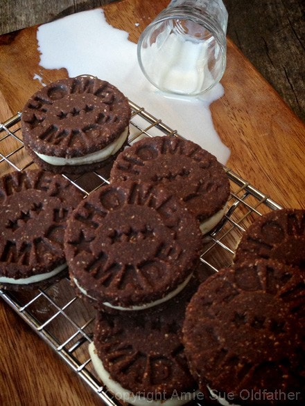
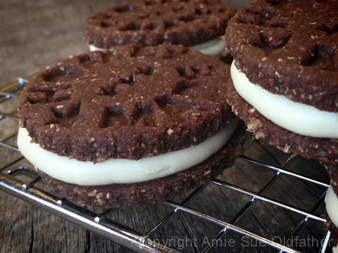
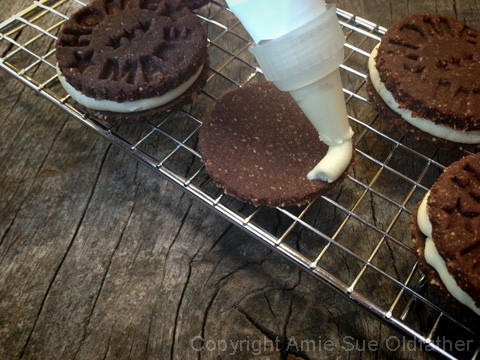
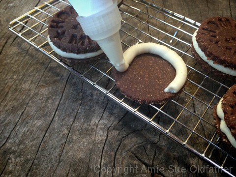
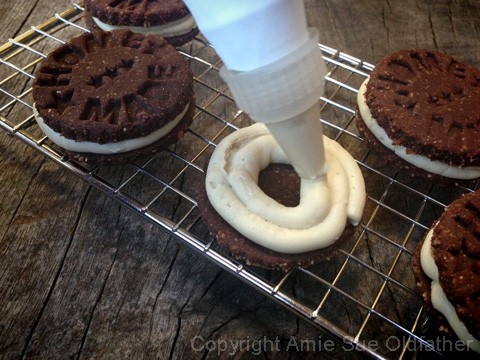
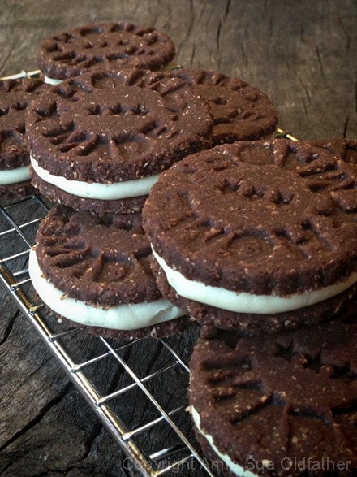

Chocolate and Cream Sandwich Cookie

~ raw, vegan, gluten-free ~
I have been on a quest, a mission, a challenge, sent from a loving mother of Max. Max is a 7-year-old, (just had his birthday! Say “Happy Birthday” to Max) who is an Oreo cookie lover. And according to his mom, he knows his Oreos!
So, I was asked if I could create a raw Oreo ice cream. How can I let down a precious 7-year-old ?! Especially after she sent me a picture of him and those big brown eyes… ooh dear. I melted.
Before I could even think of creating ice cream, I needed to conquer the cookie first… after all, the cookie is the star of the show. So, my endeavors began. First of all, it has been maybe 10 years since I even had one of these cookies so I needed to do a little homework. I needed to know what ingredients were used, so I could convert them to raw. Lord have mercy… this is what they contain:
Oreo Ingredients
OREO CHOCOLATE SANDWICH COOKIES: SUGAR, UNBLEACHED ENRICHED FLOUR (WHEAT FLOUR, NIACIN, REDUCED IRON, THIAMINE MONONITRATE {VITAMIN B1}, RIBOFLAVIN {VITAMIN B2}, FOLIC ACID), HIGH OLEIC CANOLA AND/OR PALM AND/OR CANOLA AND/OR SOYBEAN OIL, COCOA (PROCESSED WITH ALKALI), HIGH FRUCTOSE CORN SYRUP, CORNSTARCH, LEAVENING (BAKING SODA AND/OR CALCIUM PHOSPHATE), SALT, SOY LECITHIN… I will stop there. This is only 1/4 of the list of ingredients!
This cookie didn’t make the cut for my Raw-E-O Cookie Ice Cream recipe but it wasn’t because it lacked yumminess. I was aiming for a firmer cookie base, I wanted it to hold up to the ice cream. But, that is not to say that this cookie didn’t turn out scrumptious by any means. Just ask Bob, he ate every one of them! In case you are wondering, I used a cookie stamp that reads, “Home Made”. Here is a link to it.
Ingredients:
Yields 18 sandwich cookies

Cookies:
Frosting: yields 2 1/2 cups
- 1 cup cashews, soaked 2+ hours
- 3/4 cups thick coconut milk, fresh or canned
- 1/4 cup maple syrup, lightest color
- 1 Tbsp vanilla extract
- 1/8 tsp Himalayan pink salt
- 1/2 cup coconut oil, melted
- 1 Tbsp lecithin powder
Preparation:
Cookies:
- In the food processor, fitted with the “S” blade, pulse together the almond flour, ground flax, cacao powder, shredded coconut, coconut flour, and salt.
- Add the water, sweetener, vanilla, and stevia. Pulse together until thick batter forms. Place in a medium-sized bowl and chill for 2+ hours. I chilled mine overnight.
- To roll out the cookies, place the batter in the center of a teflex sheet and cover it with another teflex sheet.
- Roll out till 1/4 ” thick.
- Using a circular cookie cutter, cut out as many circles as you can.
- Transfer the cookies to the mesh sheet that comes with the dehydrator.
- Gather the dough scraps and repeat the rolling out process to continue to make cookies.
- Dehydrate at 145 degrees (F) for 1 hour, then reduce to 115 degrees (F) for 16 +/- hours, until they are firm but not hard.
Frosting:
- After soaking the cashews, drain and rinse them well. Set aside.
- In a high-speed blender combine in order; coconut milk, maple syrup, vanilla, salt, and cashews.
- By placing the liquids in first, it helps the blades spin more easily.
- Blend until creamy and don’t feel any grit in the frosting.
- Depending on the blender, this may take anywhere from 1-5 minutes.
- While the blender is running and a vortex is in motion, drizzle in the coconut oil. Make sure that it gets well incorporated.
- Now add the lecithin and process just until mixed in.
- Place the frosting in an airtight container and place in the fridge for 2-4 hours to firm.
- For the cookie, I used a piping bag and tip.
- This gave the edges of the filling a nice professional look.
- When you place the top cookie on the frosting, just press down slightly, don’t push too hard or the frosting will bulge out too far.
- Place in an air-tight container and keep it in the fridge.
- This will cause the filling to firm up.
- If the cookies are left out in room air for more than several hours, the frosting will start to get soft.
- These cookies also freeze well. Not only that, they taste well frozen. :) In fact, if you want to keep them frozen and eat them frozen, you can skip the dehydration process.
Culinary Explanations:
- Why do I start the dehydrator at 145 degrees (F)? Click (here) to learn the reason behind this.
- When working with fresh ingredients it is important to taste test as you build a recipe. Learn why (here).
- Don’t own a dehydrator? Learn how to use your oven (here). I do however truly believe that it is a worthwhile investment. Click (here) to learn what I use.




© AmieSue.com